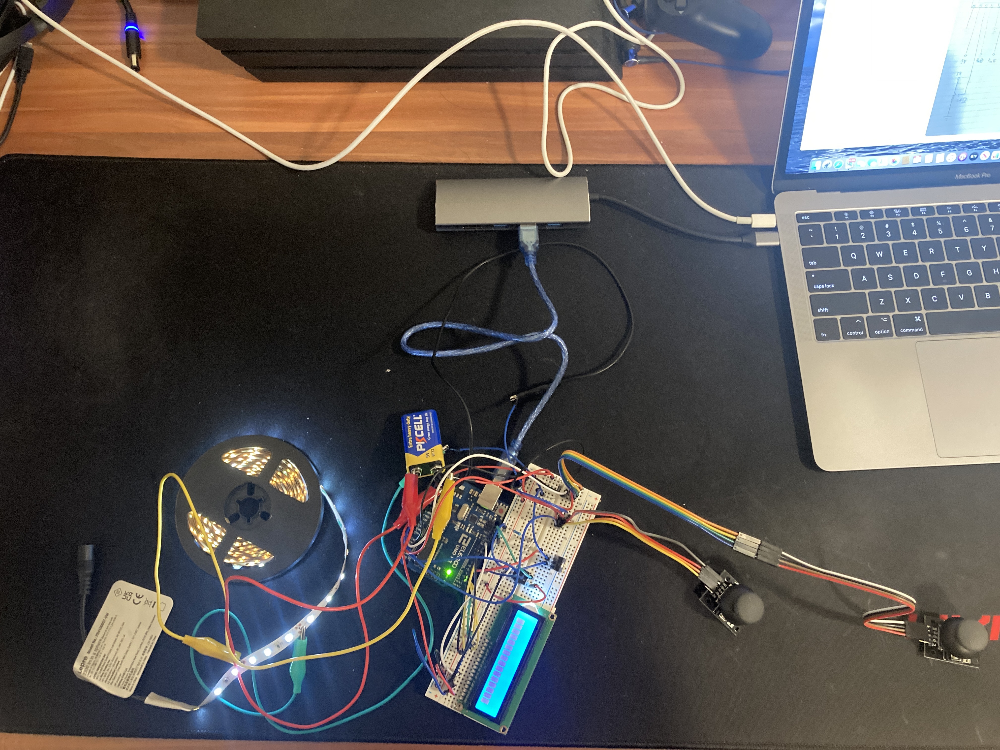
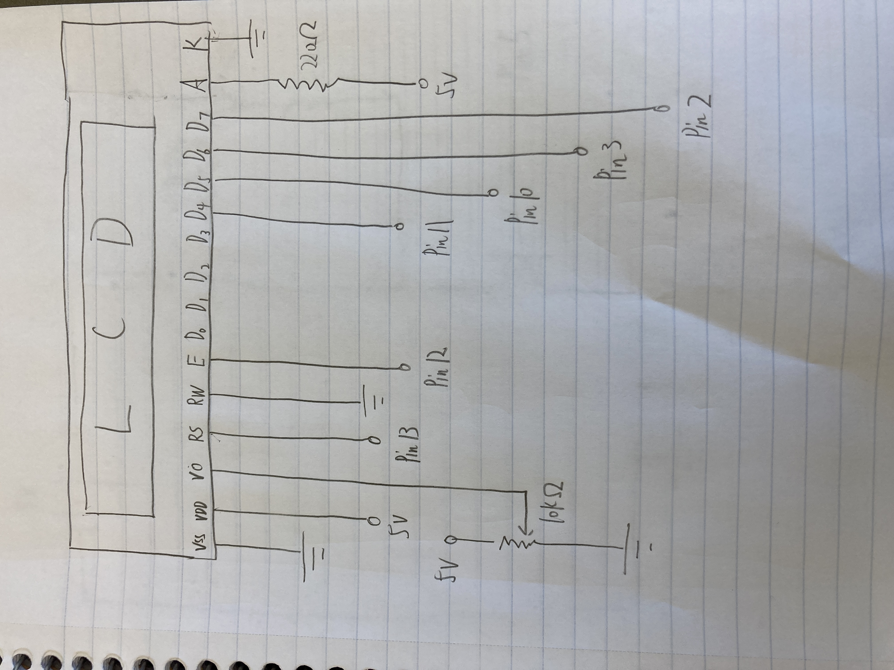
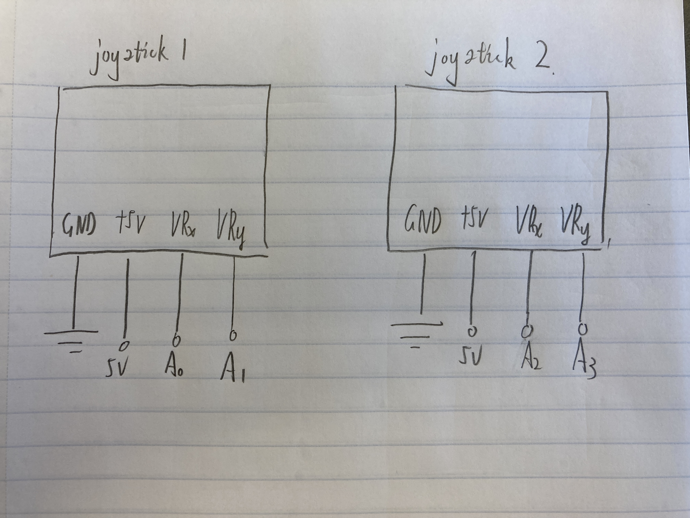

Final - Mario Game
Concept:
I would like to combine this project with HCDE 438 to play the Mario Game. One Joystick with x and y axis to control Mario move right, left, jump. Another Joystick is able to control Mario to shoot bullet. Make a LED strip change when score changed. Make content inside of LCD changed when score or gameover status changed.
- P5.JS: Coding the Mario game
- 1st Joystick: will control with x and y axis to control Mario move right, left or jump.
- 2nd Joystick: will control with y axis to control Mario to shoot bullets.
- LED Strip: Regardless of the player's score plus or minus, make a LED strip blink 2 times. If score is plus, LED strip will light up a little bit. If score go down, LED strip will dim a little bit.
- LCD: When the score is plus, LCD will print "Great job". When score is minus, LCD will print "U cheater". When gameover and score is more than 5, LCD will print "Excellent". When gameover and score is less than 5, LCD will print "Hh, U LOST".
Technical write up

(image)
For LCD:
Based on the reference: https://www.circuitbasics.com/how-to-set-up-an-lcd-display-on-an-arduino/
"The potentiometer is used to adjust the screen contrast. I typically use a 10K Ohm potentiometer, but other values will also work."
So, I'm using the 10k resistor with potentiometer.

LCD
For LED strip and transistor:
The transistor can handle a max current because:
- I search online and find the datasheet about LE 12V LED Strip Light. The datasheet said "Wattage: 16 watts". Our battery is 9V(smaller than 12V, which is great), so I assume that the max current is "16 watts / 12V = 1.3A" which is so much smaller than 32A (32A is transistor's max current).

LED Strip
2 Joysticks
Arduino Code:
#include //include the LiquidCrystal library
LiquidCrystal lcd(13, 12, 11, 10, 3, 2); //Using the LiquidCrystal library to set LCD connect to pin 13, 12, 11, 10, 1, 0
const int JOYSTICK_X_PIN = A0; //set joystick x pin as A0
const int JOYSTICK_Y_PIN = A1; //set joystick y pin as A1
const int JOYSTICK_X_PIN2 = A2; //set joystick x pin as A2
const int JOYSTICK_Y_PIN2 = A3; //set joystick y pin as A3
int origin = 100; //set original LED value is 100
int constrain_range2 = constrain(origin, 0, 200); // constrain the LED Strip value's range
unsigned long lastDisplayTime = 0; // set lastDisplayTime is 0
const unsigned long displayDuration = 1000; //set displayDuration time is 1000 - 1 second
void setup() {
// Initialize the serial connection
Serial.begin(9600);// initialize serial communication at 9600 bits per second:
pinMode(5, OUTPUT); //make pin 5 as an output
lcd.begin(16, 2); //The name of the object of the class LiquidCrystal. 16×2 translates o a display 16 characters per line in 2 such lines
lcd.clear(); // clear the LCD screen
analogWrite(5, 100); // set the brightness of pin 9 is 100
}
// the loop routine runs over and over again forever:
void loop() {
int xValue = analogRead(JOYSTICK_X_PIN); // Read the analog input values from the X pins of the joystick
int yValue = analogRead(JOYSTICK_Y_PIN); // Read the analog input values from the y pins of the joystick
int xValue2 = analogRead(JOYSTICK_X_PIN2); // Read the analog input values from the X pins of the joystick2
int yValue2 = analogRead(JOYSTICK_Y_PIN2); // Read the analog input values from the y pins of the joystick2
Serial.print("["); //print "[" to start list
Serial.print(xValue); //print x value
Serial.print(","); //print comma
Serial.print(yValue); //print y value
Serial.print(",");//print comma
Serial.print(xValue2); //print x value2
Serial.print(","); //print comma
Serial.print(yValue2); //print y value2
Serial.println("]"); //print "]" to end list
delay(100); //delay for 0.01 s
int constrain_range = constrain(xValue, 0, 1023); // limits range of sensor values to between 0 and 1023
if(Serial.available()){ // if there's serial data
char inByte = Serial.read();// Read serial data if it's available
if (inByte == 'R') { //if serial data is 'R'
lcd.clear(); //clear the LCD screen
lcd.print("U cheater"); //display "U cheater" on LCD
constrain_range2 -= 30; //LED Strip minus 30, dim a little bit
analogWrite(5, constrain_range2); // set the brightness of pin 9 is constrain_range2
delay(100); //delay for 0.1s
analogWrite(5, 0); // set the brightness of pin 9 is 0
delay(100); //delay for 0.1s
analogWrite(5, constrain_range2);// set the brightness of pin 9 is constrain_range2
delay(100);//delay for 0.1s
analogWrite(5, 0);// set the brightness of pin 9 is 0
delay(100);//delay for 0.1s
analogWrite(5, constrain_range2);// set the brightness of pin 9 is constrain_range2
delay(100);//delay for 0.1s
lastDisplayTime = millis(); // set lastDisplayTime is to return the number of milliseconds that the sketch has been running
} else if (inByte == 'P') { // if serial data is 'P'
lcd.clear(); //clear the LCD screen
lcd.print("Great job"); // display "Great job" on LCD
constrain_range2 += 30; //LED Strip plus 30, light up a little bit
analogWrite(5, constrain_range2);// set the brightness of pin 9 is constrain_range2
delay(100);//delay for 0.1s
analogWrite(5, 0); // set the brightness of pin 9 is 0
delay(100);//delay for 0.1s
analogWrite(5, constrain_range2);// set the brightness of pin 9 is constrain_range2
delay(100);//delay for 0.1s
analogWrite(5, 0); // set the brightness of pin 9 is 0
delay(100);//delay for 0.1s
analogWrite(5, constrain_range2);// set the brightness of pin 9 is constrain_range2
delay(100);//delay for 0.1s
lastDisplayTime = millis(); // set lastDisplayTime is to return the number of milliseconds that the sketch has been running
} else if (inByte == 'D') { // if serial data is 'D'
lcd.clear(); //clear the LCD screen
lcd.print("Hh, U LOST"); //display "Hh, U LOST" on LCD
constrain_range2 = 0; // set the constrain_range2 is 0
analogWrite(5, constrain_range2); // set the brightness of pin 9 is constrain_range2
lastDisplayTime = millis();// set lastDisplayTime is to return the number of milliseconds that the sketch has been running
} else if (inByte == 'E') { // if serial data is 'E'
lcd.clear(); //clear the LCD screen
lcd.print("Excellent");//display "Excellent" on LCD
constrain_range2 = 200; // set the constrain_range2 is 200
analogWrite(5, constrain_range2);// set the brightness of pin 9 is constrain_range2
lastDisplayTime = millis();// set lastDisplayTime is to return the number of milliseconds that the sketch has been running
} else if (inByte == 'W') {// if serial data is 'W'
lcd.clear();//clear the LCD screen
constrain_range2 = 100;// set the constrain_range2 is 100
analogWrite(5, constrain_range2);// set the brightness of pin 9 is constrain_range2
} else { // else
lcd.clear(); //clear the LCD screen
}
}
if (millis() - lastDisplayTime >= displayDuration) { //if the content show up on LCD more than 1 second
lcd.clear(); // clear the LCD screen
}
}
JavaScript Code:
//https://workshops.hackclub.com/platformer/
var groundSprites;
var GROUND_SPRITE_WIDTH = 100;
var GROUND_SPRITE_HEIGHT = 100;
var numGroundSprites;
var GRAVITY = 2;
var numGroundSprites;
var mario, mario_running;
var JUMP = -10;
var isGameOver;
var score;
var Gooma,Gooma_running;
var GoomaMonster;
var MarioBullets = [];
var fly, fly_running;
var flyMonster;
var bulletCreated = false;
var dataarray = [];
var serial;
var portName = '/dev/tty.usbmodem143201';
var come_on = false;
// const CLEAR_LCD_CHAR = '\x08';
window.preload = () => { //load the animation first
mario_running = loadAnimation("Capture1.png","Capture3.png","Capture4.png");
Gooma_running = loadAnimation("776e9795421d4a36e17e34bfb1c935e6oFf0FiO7qBS9Nlkn-0.png", "776e9795421d4a36e17e34bfb1c935e6oFf0FiO7qBS9Nlkn-1.png", "776e9795421d4a36e17e34bfb1c935e6oFf0FiO7qBS9Nlkn-3.png", "776e9795421d4a36e17e34bfb1c935e6oFf0FiO7qBS9Nlkn-4.png", "776e9795421d4a36e17e34bfb1c935e6oFf0FiO7qBS9Nlkn-5.png");
fly_running = loadAnimation("a88572578d16f7b00971c949aecc5812_w200-0.png", "a88572578d16f7b00971c949aecc5812_w200-1.png", "a88572578d16f7b00971c949aecc5812_w200-2.png", "a88572578d16f7b00971c949aecc5812_w200-3.png", "a88572578d16f7b00971c949aecc5812_w200-4.png", "a88572578d16f7b00971c949aecc5812_w200-5.png", "a88572578d16f7b00971c949aecc5812_w200-6.png", "a88572578d16f7b00971c949aecc5812_w200-7.png")
}
window.setup= () => {
serial = new p5.SerialPort(); // make a new instance of the serialport library
serial.on('list', printList); // set a callback function for the serialport list event
serial.on('connected', serverConnected); // callback for connecting to the server
serial.on('open', portOpen); // callback for the port opening
serial.on('data', serialEvent); // callback for when new data arrives
serial.on('error', serialError); // callback for errors
serial.on('close', portClose); // callback for the port closing
serial.list(); // list the serial ports
serial.open(portName); // open a serial port
isGameOver = false;
score = 5;
textSize(36);
createCanvas(windowWidth, windowHeight);
background(150, 200, 250);
groundSprites = new Group();
numGroundSprites = width / GROUND_SPRITE_WIDTH + 1;
for (var n = 0; n < numGroundSprites; n++) {
var groundSprite = createSprite(
n * 100,
height - 10,
GROUND_SPRITE_WIDTH,
GROUND_SPRITE_HEIGHT
)
groundSprites.add(groundSprite);
}
mario = createSprite(50,height-90,50,50); //create the mario sprite
mario.addAnimation("running", mario_running); //set up mario animation
mario.scale = 0.5; //set up mario scale
// obstacleSprites = new Group();
GoomaMonster = new Group(); //create goomamonster group
GoomaMonster.addAni("Gooma_running", Gooma_running);
flyMonster = new Group(); //create flymonster group
flyMonster.addAni("fly_running", fly_running);
}
function printList(portList) {// portList is an array of serial port names
for (var i = 0; i < portList.length; i++) {
// Display the list the console:
print(i + " " + portList[i]);
}
}
function serverConnected() { //set up function to check server connection
print('connected to server.');
}
function portOpen() { //set up function to check if port is open
print('the serial port opened.')
}
function serialError(err) { //set up function to if any error oin serial
print('Something went wrong with the serial port. ' + err);
}
function portClose() { //set up function to if post is closed
print('The serial port closed.');
}
function serialEvent() { //set up function to if post is closed
if (serial.available()) {
var datastring = serial.readLine(); // readin some serial
var newarray;
try {
newarray = JSON.parse(datastring); // can we parse the serial
if (typeof newarray == 'object') {
dataarray = newarray;
}
console.log("got back " + datastring);
} catch(err) {
// got something that's not a json
}
}
}
window.draw = () => {//start to draw the graph
if (isGameOver) { //if game is over
background(0);
fill(255);
textAlign(CENTER);
text('Your score was: ' + score, width/2, height/2);
text(
'Game Over! Click anywhere to restart',
width/2,
height/2 - 100
);
if (score < 5 && !come_on) {
dead();
come_on = true;
};
if (score >= 5 && !come_on) {
dead_honor();
come_on = true;
};
mario.remove();
// obstacleSprites.remove();
GoomaMonster.remove();
groundSprites.remove();
flyMonster.remove();
console.log(MarioBullets);
for (var i = 0; i < MarioBullets.length; i++) {
MarioBullets[i].remove();
}
if (mouseIsPressed) { //when mouse is pressed
isGameOver = false;
score = 5;
background(150, 200, 250);
groundSprites = new Group();
numGroundSprites = width / GROUND_SPRITE_WIDTH + 1;
for (var n = 0; n < numGroundSprites; n++) {
var groundSprite = createSprite(
n * 100,
height - 10,
GROUND_SPRITE_WIDTH,
GROUND_SPRITE_HEIGHT
)
groundSprites.add(groundSprite);
}
mario = createSprite(50,height-90,50,50);
mario.addAnimation("running", mario_running);
mario.scale = 0.5;
// Reset the game variables
score = 5;
reset_LED();
isGameOver = false;
come_on = false;
}
} else { //if game is not over
background(150, 200, 250);
mario.overlap(groundSprites, over);
mario.addSpeed(0.25, 90);
mario.addSpeed(0.1, 0);
mario.position.x = mario.position.x + 3;
if (dataarray[0] < 400 && mario.position.y >= height - 100) { //the 1st number in the list from Arduino is smaller than 400 and mario's y position is higher or equal to height -100
mario.velocity.y = JUMP; //mario just jump
};
// if (kb.presses('w') && mario.position.y >= height - 100) {
// mario.velocity.y = JUMP;
if (dataarray[1] > 700) { //if the 2nd number in the list from Arduino is larger than 700
mario.velocity.x = -7;
}
if (dataarray[1] < 400) { //if the 2nd number in the list from Arduino is smaller than 400
mario.velocity.x = 1;
}
if (mario.velocity.x > 1) {
mario.velocity.x = 1;
}
if (mario.position.y < 0) {
mario.velocity.y = GRAVITY;
}
// if (key == "s") {
// mario.velocity.y = GRAVITY + 2;
// }
camera.position.x = width / 2;
if (mario.position.x > width * 2 / 3) {
mario.position.x = width * 2 / 3;
}
if (mario.position.x < 0) {
mario.position.x = 0;
}
if (dataarray[3] < 400 && !bulletCreated) {//if the 4th number in the list from Arduino is smaller than 400 and there's no bullet be created
var bullet = createSprite(mario.position.x + 10, mario.position.y - 20, 20, 20);
bullet.shapeColor = color(255, 255, 255);
bullet.velocity.x = 2;
bullet.velocity.y = 0;
bullet.position.y = mario.position.y;
MarioBullets.push(bullet);
score = score - 1;
score_reduce();
bulletCreated = true;
}
if (dataarray[3] > 500) {//if the 4th number in the list from Arduino is larger than 500
bulletCreated = false
}
if (score < 0) {
endGame();
}
var firstGroundSprite = groundSprites[0];
if (firstGroundSprite.position.x <= -10) {
groundSprites.remove(firstGroundSprite);
firstGroundSprite.position.x = numGroundSprites*firstGroundSprite.width;
firstGroundSprite.position.y = height - 10;
groundSprites.add(firstGroundSprite);
}
if (random() > 0.995) {
let new_Gooma = new GoomaMonster.Sprite(width, height-100, 100, 100); //create new gooma sprite
new_Gooma.scale = 0.3;
}
if (random() > 0.995) {
let new_fly = new flyMonster.Sprite(width, random(height-400, height - 200), 100, 100);//create new fly monster sprite
new_fly.scale = 0.3;
}
for (var i = 0; i < GoomaMonster.length; i++) {
GoomaMonster[i].position.x -= 5;
// GoomaMonster[i].overlap(mario, endGame);
if (mario.overlap(GoomaMonster[i])) {
// if (mario.overlap(GoomaMonster[i], {preventOverlap: true})) {
// check if the player is jumping
if (mario.position.y < height-90) {
// the player is jumping, remove the monster
GoomaMonster[i].remove();
score = score + 1;
score_plus();
} else {
// the player is not jumping, end the game
endGame();
}
} else {
GoomaMonster[i].position.x -= 0.5;
}
}
for (var i = 0; i < flyMonster.length; i++) {
flyMonster[i].position.x -= 5;
if (mario.overlap(flyMonster[i])) {
endGame();
} else {
flyMonster[i].position.x -= 0.5;
}
}
for (var i = 0; i < MarioBullets.length; i++) {
MarioBullets[i].position.x += 5;
for (var j = 0; j < GoomaMonster.length; j++) {
if (MarioBullets[i].overlap(GoomaMonster[j])) {
GoomaMonster[j].remove();
MarioBullets[i].remove();
}
}
}
for (var i = 0; i < groundSprites.length; i++) {
groundSprites[i].position.x -= 5;
}
drawSprites();
textAlign(CENTER);
text("Score: " + score, 100, 60);
}
}
function endGame() { // create function to end game
isGameOver = true;
console.log("ii");
}
function over(mario, groundSprites) { //create function to set up the mario's velocity and position when mario overlap with groundSprites
mario.velocity.y = 0;
mario.position.y = height - 90;
}
function score_reduce() { // create function if score is reduced
// clearLCD();
let string = 'R';
serial.write(string);
console.log(string);
}
function score_plus() { // create function if score is reduced
// clearLCD();
let string = 'P';
serial.write(string);
console.log(string);
}
function dead() {// create function if game is over
// clearLCD();
let string = 'D';
serial.write(string);
console.log(string)
}
function dead_honor() { // create function if game is over, but score is higher than 5
// clearLCD();
let string = 'E';
serial.write(string);
console.log(string)
}
function reset_LED() { // create function when game is restart
// clearLCD();
let string = 'W';
serial.write(string);
console.log(string);
}